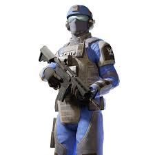
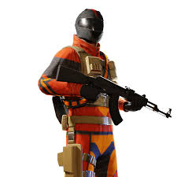
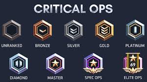

Critical ops

Historia do jogo
Foi lançado pela primeira vez em 14 de agosto de 2015 na versão para navegador do Facebook, mas posteriormente mudou para o Facebook Gameroom em 30 de agosto de 2016. Foi lançado em 30 de setembro de 2015 para Google Play.
Atualmente ele esta disponivel somente para a Google Play,no caso so disponivel para aparelhos moveis, nao esta mais disponivel para computadores como foi seu lancamento em 2015.
Gameplay
Duas equipes opostas de Coalition (representando unidades de Contraterrorismo) e The Breach (representando unidades de Terrorismo) lutam entre si para lutam entre si para completar seus objetivos. Uma equipe vence ao completar objetivos específicos ou ao eliminar a outra equipe. O jogo apresenta outros modos de jogo, como Team Deathmatch, Defuse, Elimination, Defend, Wingman, Ranked Defuse, Gun-Game, Practice e Event Modes. Os jogadores também podem escolher hospedar salas personalizadas e entrar em salas hospedadas por outros jogadores usando Custom Matches.
- Coalition 
- The Breach 
Ranks
As classificações podem ser alcançadas jogando o Modo de Jogo Ranqueado, Ranqueado é um modo de jogo competitivo onde os jogadores jogam uma partida baseada em desarmamento com quem atingir 13 rodadas vence, vence a partida. As partidas de colocação de classificação colocam os jogadores na mesma classificação que eles ou 1 classificação acima ou abaixo de sua classificação. As partidas de classificação geralmente duram cerca de 30 minutos e as temporadas classificadas duram cerca de 3-4 meses.
ogadores de Critical Ops podem atingir 10 classificações, como Não classificado (classificação padrão), Ferro, Bronze, Prata, Ouro, Platina, Diamante, Mestre, Operações Especiais e Operações de Elite
